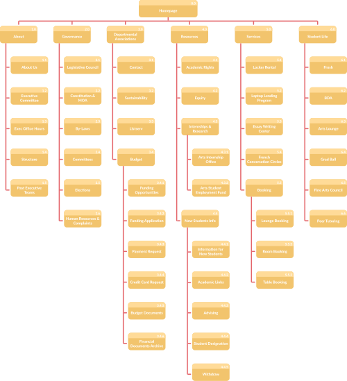

Arts Undergraduate Society
Role: Research, Ideation, Visuals, Prototyping
Timeline: September 2020 - May 2021
Tools: Figma, Miro
Overview
The Arts Undergraduate Society (AUS) represents represent all McGill students in the Faculty of Arts. It provides services, resources, and events for ~9,000 students, and oversees 30 Departamental Associations for individual majors.
The AUS site had not been updated for 10+ years.
The AUS holds yearly elections for the Executive Committee, so the web team changes annually. This requires the website to be easily transferable from admin to admin, with a well-documented CMS and a clear organizational structure.
Goals
1. Remove obsolete pages and re-organize content for a more intuitive experience
2. Highlight resources and services to be easily accessible to students
3. Clearly identify the roles and the contact info for the many branches of the AU
4. Set up the site for easy updates and seamless year-to-year transition for the executive committee
User Personas
These three types of people represent the range of students seeking different services from AUS.


Site Map
For its overhaul, we completed an in-depth site audit to plan for better usability. After we gained an overview perspective, we determined which content could be carried over and what would need to be created from scratch.
Then, we contacted the different AUS branches and Departmental Associations to better understand their roles within the organization and how they overlapped with other branches, as well as to learn what they considered essential information to include on the site.
User Journey
A major issue with the original site was the difficulty of updating information across the various branches and departments.
We wanted to create one shared, organization-wide vision, so we need to create a journey map for cross-department collaboration. Among all the different branches of the AUS– from the Laptop Lending Program to the Arts Employment Fund– we decided to split the offerings into Resources and Services: how students can help themselves and how AUS can help students.


Final Product
With the wireframe, style guide, and site map in order, I went ahead and created a prototype for internal testing, and then we send the prototype for the greater Communications team. The main accomplishment we wanted to achieve with this test was to see the approach users would take with the overall layout.
After some tweaks, we sent out the updated site to peers and classmates, and we received a lot of insightful feedback. Since we were doing remote learning due to the pandemic, services that were traditionally offered mainly in-person had to have their pages modified so that their digital contacts were more promiment. For example. the online office hours had to have their schedules posted and updated regularly on the site, rather than scattered across different newsletters.

Learnings
This was my first-ever UX project and I was very grateful for the opportunity to learn and receive feedback. In particular, some things I'm excited to apply for my next project:
1. In the beginning, iterate and brainstorm as much as possible. Especially with such a link-heavy header, there were so many things we needed to fit into such a small space. We experimented with many different layouts and groupings, and we looked at many other university websites for inspiration.
2. A major issue of the old site was the loading time– huge image files and messy redirects dragged down the loading speed. Especially with the remote classes at the time, our student population was spread out and we had to consider those who could have precarious access to high-speed internet. Being mindful of file sizes and establishing guidelines for departments to submit images helped sort out this problem.
3. On a similar note, a priority for me was to keep an organized file system and documentation for the next site manager, which is a position that changes incumbent every year. My vision was for my successor to have an easy transition into the role, so that they could have plenty of time to expand on the site, rather than spend months getting accustomed to it.